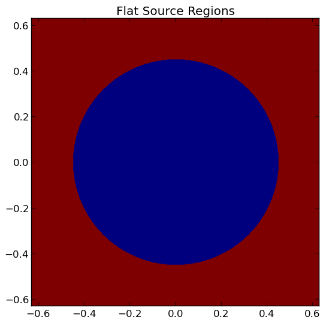

3. Writing Python Input Files¶
OpenMOC is provided to users as a Python API. As a result, there are not strict constraints on how an input file is written for an OpenMOC simulation as there are in many other scientific simulation codes. Instead, users may write a Python script or program and import OpenMOC and simply use the classes or routines which are necessary for a particular simulation. The OpenMOC/sample-input/ directory in the OpenMOC folder includes many example scripts for simulations ranging in complexity from a simple pin cell to the C5G7 benchmark problem.
The following sections describe the essential portions of the OpenMOC API needed for reactor eigenvalue calculations. For more detail on the full extent of OpenMOC capabilities, users should reference the OpenMOC API documentation.
Note
It is highly suggested that users acquire a basic understanding of Python before developing OpenMOC simulations. For users familiar with basic programming constructs such as loops and conditionals, the official Python Tutorial is an excellent place to learn Python basics. For users new to programming, the Code Academy Python Course provides an introduction to both programming essentials and the Python language.
3.1. Simulation Parameters¶
The full power of Python is available to users designing OpenMOC simulations. As a result, simulation parameters may easily be defined and redefined in a Python script for one or more simulations at a user’s discretion. However, some simulation parameters are best defined at runtime, including the number of azimuthal angles, track spacing, number of threads, etc.
The openmoc.options module provides functionality to parse arguments defined on the command line at runtime. The full list of options available in OpenMOC are itemized and described in Runtime Options. The following code snippet illutrates how to instantiate an Options object and extract data from command line arguments.
import openmoc.options as opt
# Instantiate and Options object
options = opt.Options()
# Retrieve runtime options parsed in by the Options object
num_threads = options.getNumThreads()
track_spacing = options.getTrackSpacing()
num_azim = options.getNumAzimAngles()
tolerance = options.getTolerance()
max_iters = options.getMaxIterations()
...
Table 1 below itemizes each of the runtime options and the corresponding command line arguments and getter methods for the Options class in the openmoc.options module.
| Runtime Option | Command Line Argument | Options Class Getter Method |
|---|---|---|
| Help | -h, --help | N/A |
| No. Azimuthal Angles | -a, --num-azim= | getNumAzimAngles() |
| Track Spacing [cm] | -s, --track-spacing= | getTrackSpacing() |
| Max. No. Source Iterations | -i, --max-iters= | getMaxIterations() |
| Source Convergence Tolerance | -c, --tolerance= | getTolerance() |
| No. OpenMP Threads | -t, --num-omp-threads= | getNumThreads() |
| No. CUDA Thread Blocks | -b, --num-thread-blocks= | getNumThreadBlocks() |
| No. CUDA Threads per Block | -g, --num-gpu-threads= | getNumThreadsPerBlock() |
Table 1: Runtime options and command line arguments supported by the openmoc.options module.
3.2. Simulation Log Files¶
The openmoc.log module provides routines for printing output to the console as well as to log files. Output is reported in real-time to the console as well as stored in a persistent log file. By default, the log file name encapsulates a timestamp for the simulation starting time and is stored in the /OpenMOC/log directory (e.g. OpenMOC/log/openmoc-MM-DD-YYYY--HH:MM:SS.log).
The OpenMOC logging module uses verbosity throttling which allows for coarse-grained control of the type and amount of messages reported to the user at runtime. Each message is designated a log level, and each level is prioritized with respect to other levels. At runtime, a log level is specified for a simulation and only those messages designated at that log level or a higher priority log level are printed to the console and log file. The log levels available in OpenMOC are presented in Table 2.
| Log Level | Note |
|---|---|
| DEBUG | A debugging message |
| INFO | An informational but verbose message |
| NORMAL | A brief progress update on run progress |
| SEPARATOR | A message of a single line of characters |
| HEADER | A message centered within a single line of characters |
| TITLE | A message sandwiched between two lines of characters |
| WARNING | A message to warn the user |
| CRITICAL | A message to warn of critical program conditions |
| RESULT | A message containing program results |
| UNITTEST | A message for unit testing |
| ERROR | A message reporting error conditions |
Table 2: Log levels in OpenMOC in order of increasing precedence.
Informative messages using the logging module are embedded into both the C/C++ and Python source code in OpenMOC. In addition, code users may add their own messages to the output stream in Python input files. The API documentation provides a detailed accounting of the routines available in the logging module.
The following code snippet illustrates how to import the logging module into Python, set the lowest log level set to DEBUG, and print messages for each level to the screen.
import openmoc.log as log
# Set the lowest acceptable log level to DEBUG mode
log.set_log_level('DEBUG')
# Print some exaple messages to the console and log file
log.py_printf('DEBUG', 'This is a DEBUG message')
log.py_printf('INFO', 'This is an INFO message')
log.py_printf('NORMAL', 'This is a NORMAL message')
log.py_printf('SEPARATOR', 'This is a SEPARATOR message')
log.py_printf('HEADER', 'This is a HEADER message')
log.py_printf('TITLE', 'This is a TITLE message')
log.py_printf('WARNING', 'This is a WARNING message')
log.py_printf('CRITICAL', 'This is a CRITICAL message')
log.py_printf('UNITTEST', 'This is a UNITTEST message')
log.py_printf('ERROR', 'This is an ERROR message)
And the following is the output displayed to the console and recorded in the log file:
[ DEBUG ] This is a DEBUG message
[ INFO ] This is an INFO message
[ NORMAL ] This is a NORMAL message
[SEPARATOR] *******************************************************************
[ HEADER ] ******************* This is a HEADER message ********************
[ TITLE ] *******************************************************************
[ TITLE ] This is a TITLE message
[ TITLE ] *******************************************************************
[ WARNING ] This is a WARNING message
[ CRITICAL] This is a CRITICAL message
[ UNITTEST] This is a UNITTEST message
Traceback (most recent call last):
File "<stdin>", line 1, in <module>
File "openmoc/log.py", line 59, in py_printf
openmoc.log_printf(openmoc.ERROR, my_str % args)
RuntimeError: This is an ERROR message
It should be noted that the py_printf(...) routine in the logging module is based on the printf routine in C/C++ and accepts a variable number of arguments. In particular, this is intended to accept formatted data to embed formatted integers, floats, strings, etc. in the output message. An example of this feature in use is given below:
import openmoc.log as log
# Set the lowest acceptable log level to NORMAL mode
log.set_log_level('NORMAL')
# Initialize some string, integer and float variables
name = 'Will Boyd'
age = 26
pi = 3.141593
# Print example messages using formatted output arguments
# to the console and log file
log.py_printf('NORMAL', 'Hello World! My name is %s', name)
log.py_printf('NORMAL', 'I am %d years old. My favorite # is %f', age, pi)
This will result in the following output messages to be printed to the console and stored to the log file:
[ NORMAL ] Hello World! My name is Will Boyd
[ NORMAL ] I am 26 years old. My favorite # is 3.141593
Note
By default, the logging module will split log messages into multiple lines of 80 characters or less each. Users may alternatively set a custom maximum line length for log messages may at runtime using the set_line_length(...) routine.
3.3. Materials Specification¶
OpenMOC uses multi-group macroscopic nuclear cross-sections, provided by the user. OpenMOC does not perform self-shielding or depletion calculations, so isotropic concentrations are not used. In OpenMOC, cross-section data is encapsulated by the Material class in the main openmoc Python module. A Material class may be instantiated in Python and cross-sections may be loaded into it using NumPy data arrays as illustrated by the following code snippet:
import openmoc
import numpy
# Initialize material cross-sections using NumPy data arrays
num_groups = 8
sigma_a = numpy.array([0.1,0.15,0.2,0.25,0.35,0.4,0.45,0.5])
sigma_f = numpy.array([0.05,0.1,0.15,0.2,0.25,0.3,0.35,0.4])
...
# Instantiate an OpenMOC Material class object with an
# automatically-generated unique ID
material = openmoc.Material(openmoc.material_id())
# Set the number of energy groups in the material
material.setNumEnergyGroups(num_groups)
# Load the cross-section data into the material
material.setSigmaA(sigma_a)
material.setSigmaT(sigma_f)
...
Warning
Users may not use Material IDs which are greater than or equal to 10,000 since these are reserved by OpenMOC for internal use only.
For many simulations, defining the nuclear data cross-sections by hand in a Python script is cumbersome and error-prone. As a result, OpenMOC includes the openmoc.materialize module for importing nuclear data cross-sections from an HDF5 or a Python pickle binary file. The materialize(...) routine is used to import data and instantiate Material objects returned via a Python dictionary. The use of the openmoc.materialize module to import HDF5 and pickle binary files is illusrated in the following snippet:
import openmoc
import openmoc.materialize as mat
# Import cross-section data from an HDF5 file. This instantiates
# objects for each material and returns them in a dictionary
# indexed by a name string defined in the pickle file.
hdf5_materials = mat.materialize('materials-data.h5')
# Retrieve the material called 'moderator' in the HDF5 file
moderator = hdf5_materials['moderator']
# Import cross-section data from a pickle file. This instantiates
# objects for each material and returns them in a dictionary
# indexed by a name string defined in the pickle file
pickle_materials = mat.materialize('materials-data.pkl')
# Retrieve the material called 'fuel' in the pickle file
fuel = pickle_materials['fuel']
The openmoc.materialize module defines a standard for cross-section data stored in binary files. First, each HDF5 file must end with the ‘.h5’ or ‘.hdf5’ extension. HDF5 files must include an Energy Groups attribute with the integer number of groups in the top level of the file data hierarchy. Finally, each material is defined as an HDF5 group with a string name to identify the material. Finally, the material group must contain the following floating point HDF5 datasets:
- ‘Total XS’
- ‘Absorption XS’
- ‘Scattering XS’
- ‘Fission XS’
- ‘Nu Fission XS’
- ‘Chi’
The following code snippet illustrates the use of the h5py Python HDF5 interface to write an HDF5 file with material cross-section data adhering to the standard expected by the openmoc.materialize module:
import numpy
import h5py
# Create an HDF5 file to store multi-groups cross-sections
f = h5py.File('materials-data.h5')
# Set the number of energy groups
f.attrs['Energy Groups'] = 8
# Material 1
# Create an HDF5 group for this material
material_group = f.create_group('Material 1')
# Initialize cross-sections as NumPy data arrays
sigma_a = numpy.array([0.1,0.15,0.2,0.25,0.35,0.4,0.45,0.5])
sigma_f = numpy.array([0.05,0.1,0.15,0.2,0.25,0.3,0.35,0.4])
...
# Create datasets for each cross-section type
material_group.create_dataset('Absorption XS', data=sigma_a)
material_group.create_dataset('Fission XS', data=sigma_f)
...
# Material 2
...
# Close and save the HDF5 file
f.close()
Alternatively, for machine withouts HDF5 and/or h5py, materials data may be imported from a pickle binary file using the openmoc.materialize module. For pickle files, the materials data should be stored as a Python dictionary. The dictionary must contain a key/value pair for the number of energy groups, and sub-dictionaries for each material’s cross-sections. The following code snippet illustrates how one might populate a pickle file with material cross-section data adhering to the standard expected by the openmoc.materialize module:
import numpy
import pickle
# Initialize a Python dictionary to store the materials data
data = dict()
# Set the number of energy groups
data['Energy Groups'] = 8
# Material 1
# Create a sub-dictoinary for this material
data['Material 1'] = dict()
# Initialize cross-sections as NumPy data arrays
sigma_a = numpy.array([0.1,0.15,0.2,0.25,0.35,0.4,0.45,0.5])
sigma_f = numpy.array([0.05,0.1,0.15,0.2,0.25,0.3,0.35,0.4])
...
# Create datasets for each cross-section type
data['Material 1']['Absorption XS'] = sigma_a
data['Material 1']['Fission XS'] = sigma_f
...
# Material 2
...
# Dump the Python dictionary of materials data to a pickle file
pickle.dump(data, open('materials-data.pkl', 'wb'))
Note
Users must ensure that the total cross-section is equal to the absorption and scattering cross-section in each group. OpenMOC will throw a runtime error will be thrown if this condition does not hold true when materials are added to the Geometry object.
3.4. Geometry Specification¶
The geometry in OpenMOC is described using constructive solid geometry (CSG), also sometimes referred to as combinatorial geometry. CSG allows a user to create complex objects using Boolean operators on a set of simpler surfaces. In the geometry model, each unique closed volume is defined by its bounding surfaces. The CSG formulation used in OpenMOC is described in more detail in Constructive Solid Geometry.
The following sections detail how to create surfaces, cells, universes and lattices to construct a simple 4  4 pin cell lattice.
4 pin cell lattice.
3.4.1. Surfaces¶
In most cases, the first step towards building a reactor geometry is to create the surfaces defining boundaries between distinct regions. The CSG formulation for surfaces in OpenMOC is described in detail in Surfaces and Halfspaces. For LWRs, the most typical surfaces needed to model 2D rectangular lattices are the Circle, XPlane, and YPlane classes. The following code snippet illustrates how to create a circle to represent a fuel pin and reflective boundary planes to surround a 4 4 lattice.
# Initialize circular fuel pin surface
circle = openmoc.Circle(x=0.0, y=0.0, radius=0.45)
# Initialize the planar surfaces bounding the entire geometry
left = openmoc.XPlane(x=-2.52)
right = openmoc.XPlane(x=2.52)
bottom = openmoc.YPlane(y=-2.52)
top = openmoc.YPlane(y=2.52)
# Set the boundary conditions for the bounding planes
left.setBoundaryType(REFLECTIVE)
right.setBoundaryType(REFLECTIVE)
bottom.setBoundaryType(REFLECTIVE)
top.setBoundaryType(REFLECTIVE)
3.4.2. Cells and Universes¶
The next step to create a geometry is to instantiate cells which represent unique geometric shapes and use them to construct universes. The CSG formulations for cells and universes in OpenMOC are discussed in further detail in Cells and Universes, respectively. OpenMOC provides the CellBasic class for cells which are filled by a material. The following code snippet illustrates how to create cells filled by the fuel and moderator materials in the universe with ID = 1. Next, the script adds the appropriate halfspace of the circle surface created in the preceding section to each cell.
# Retrieve the IDs for the fuel and moderator materials
uo2_id = materials['Fuel'].getId()
water_id = materials['Water'].getId()
# Initialize the cells for the fuel pin and moderator
fuel = openmoc.CellBasic(universe=1, material=uo2_id)
moderator = openmoc.CellBasic(universe=1, material=water_id)
# Add the circle surface to each cell
fuel.addSurface(halfspace=-1, surface=circle)
moderator.addSurface(halfspace=+1, surface=circle)
In addition to cells filled with materials, OpenMOC provides the CellFill class for cells which may be filled with universes. As a result, a geometry may be constructed of a hierarchy of nested cells/universes. A hierarchichal geometry permits a simple treatment of repeating geometric structures on multiple length scales (e.g., rectangular arrays of fuel pins and fuel assemblies).
OpenMOC does not place a limit on the hierarchical depth - or number of nested universe levels - that a user may define in constructing a geometry. The only limitation is that at the top of the hierarchy, a cell must be used to encapsulate the entire geometry in the universe with ID = 0. The following code snippet illustrates the creation of a CellFill which is filled by universe 10 - the lattice constructed in the next section - and which is part of universe 0. Finally, the appropriate halfspaces for the planes defined in the preceding section are added to the cell to enforce boundaries on the portion of universe 10 relevant to the geometry.
# Initialize a cell filled by the lattice universe. This cell
# resides within universe 0 which is designated for the top
# level nested universe in the geometry.
pin_cell_array = openmoc.CellFill(universe=0, universe_fill=10)
# Add the bounding planar surfaces to each the cell containing
# universe 0
pin_cell_array.addSurface(halfspace=+1, left)
pin_cell_array.addSurface(halfsapce=-1, right)
pin_cell_array.addSurface(halfspace=+1, bottom)
pin_cell_array.addSurface(halfspace=-1, top)
Warning
Users may not use Universe IDs which are greater than or equal to 10,000 since these are reserved by OpenMOC for internal use only.
3.4.3. Rings and Sectors¶
The spatial discretization of the geometry is a key determining factor in the accuracy of OpenMOC’s simulation results. This is especially important since OpenMOC presently uses the Flat Source Region Approximation. The spatial discretization is most relevant in regions where the flux gradient is greatest. In LWRs composed of circular fuel pins, the flux gradient is largely determined by the distance to the center of the nearest fuel pin and the angle formed between the center of the fuel pin and the point of interest (i.e., polar coordinates). As a result, discretization along the radial coordinate using circular rings, and along the angular coordinate using angular sectors is the most applicable way to discretize the geometry to capture the flux gradient.
This type of discretization is particularly useful for codes which can make use of an unstructured mesh, such as OpenMOC with its general Constructive Solid Geometry formulation. To subdivide circular fuel pins into rings and sectors in an LWR model would require a substantial amount of work for the user to create the necessary Circle and/or Plane objects. Since this is a commonly needed feature for many users, OpenMOC includes the ability to automatically subdivide square pin cells of circular fuel pins into equal volume rings and equally spaced angular sectors. In particular, OpenMOC uses cell cloning to create clones (or copies) of a CellBasic object and differentiates each one with Circle or Plane objects to subdivide the pin cell.
The following code snippet illustrates how a user may designate a positive integral number of rings and sectors for a fuel pin and moderator region with optional arguments for each to the CellBasic constructor.
# Retrieve the IDs for the fuel and moderator materials
uo2_id = materials['Fuel'].getId()
water_id = materials['Water'].getId()
# Initialize the cells for the fuel pin and moderator
# Subdivide the fuel pin into 3 rings and 8 angular sectors
# Subdivide the moderator region into 8 angular sectors
fuel = openmoc.CellBasic(universe=1, material=uo2_id, rings=3, sectors=8)
moderator = openmoc.CellBasic(universe=1, material=water_id, sectors=8)
# Add the circle surface to each cell
fuel.addSurface(halfspace=-1, surface=circle)
moderator.addSurface(halfspace=+1, surface=circle)
A pin cell without rings/sectors is illustrated on the left below, while the same pin cell with 3 equal volume rings and 8 angular sectors is displayed on the right.
|  | 
|
{kind=link}
Note
Circular rings may only be used in CellBasic objects which form the interior of a Circle surface, such as a fuel pin.
Note
Each subdivided region will be filled by the same material as the CellBasic object created by the user in the Python script.
3.4.4. Lattices¶
Once the cells for the geometry have been created, OpenMOC’s Lattice class may be used to represent repeating patterns of the cells on a rectangular array. The CSG formulation for lattices is described further in Lattices. In OpenMOC, the Lattice class is a subclass of the Universe class. The following code snippet illustrates the creation of a 4 4 lattice with each lattice cell filled by the universe with ID = 1. The total width and height of the lattice are defined as parameters when the lattice is initialized. The lattice dimensions are used to define the rectangular region of interest centered at the origin of each universe filling each lattice cell.
# Initialize the lattice for the geometry
lattice = openmoc.Lattice(id=10, width_x=5.04, width_y=5.04)
# Assign each lattice cell a universe ID
lattice.setLatticeCells([[1, 1, 1, 1],
[1, 1, 1, 1],
[1, 1, 1, 1],
[1, 1, 1, 1]])
Warning
Users may not use Lattice IDs which are greater than or equal to 10,000 since these are reserved by OpenMOC for internal use only.
Warning
Lattices are a subclass of Universe and as a result, no Lattice may have the same ID has a normal Universe.
3.4.5. Geometry¶
The final step in creating a geometry is to instantiate OpenMOC’s Geometry class. The Geometry class encapsulates all materials, surfaces, cells, universes and lattices. The following code snippet illustrates the creation of the geometry and the registration of each material, cell and lattice constructed in the preceding sections. The last line of the script is called once all primitives have been registered and is used to traverse the CSG hierarchy and index the flat source regions in the geometry.
# Initialize an empty geometry object
geometry = openmoc.Geometry()
# Add materials to the geometry first
geometry.addMaterial(materials['Fuel'])
geometry.addMaterial(materials['Water'])
# Next, add all cells to the geometry
geometry.addCell(fuel)
geometry.addCell(moderator)
geometry.addCell(pin_cell_array)
# Next, add all lattices to the geometry
geometry.addLattice(lattice)
# Next, initialize the flat source regions in the geometry after
# all materials, cells, and lattices have been added to it
geometry.initializeFlatSourceRegions()
3.5. Track Generation¶
Once the geometry has been initialized for a simulation, the next step is to perform ray tracing for track generation. The track generation process and algorithms in OpenMOC are described in more detail in Track Generation. This step requires the instantiation of a TrackGenerator object and a function call to generate the tracks as illustrated in the following code snippet.
# Initialize the track generator after the geometry has been
# constructed. Use 64 azimuthal angles and 0.05 cm track spacing.
track_generator = openmoc.TrackGenerator(geometry, num_azim=64, \
spacing=0.05)
# Generate tracks using ray tracing across the geometry
track_generator.generateTracks()
3.6. MOC Source Iteration¶
One of OpenMOC’s Solver subclasses may be initialized given the Geometry and TrackGenerator objects created in the preceding sections. The most commonly used subclasses for OpenMOC simulations are itemized below:
- CPUSolver - multi-core CPUs, memory efficient, good parallel scaling
- GPUSolver - GPUs, 30-50
The following code snippet illustrates the instantiation of the CPUSolver for multi-core CPUs. The code assigns runtime parameters to the solver and calls the convergeSource(...) routine to execute the MOC Source Iteration Algorithm.
# Initialize a solver for the simulation and set the number of
# threads and source convergence threshold
solver = openmoc.CPUSolver(geometry, track_generator)
solver.setNumThreads(4)
solver.setSourceConvergenceThreshold(1E-5)
# Converge the source with up to a maximum of 1000 source iterations
solver.convergeSource(1000)
# Print a report of the time to solution
solver.printTimerReport()
3.7. CMFD Acceleration¶
OpenMOC has an integrated CMFD acceleration framework that allows users to greatly accelerate the convergence of their neutron transport problems and achieve run-time time improvements of over 30 times. The CMFD acceleration framework is implemented in one class, Cmfd. Running a simulation with CMFD acceleration is quite easy and requires only a few additional lines of code in your input file and one command line option. The following code snippet illustrates the instantiation of the Cmfd class used to generate the CMFD mesh for your problem and give that mesh to the geometry.
# Initialize the Cmfd object
cmfd = Cmfd()
cmfd.setLatticeStructure(17,17)
# Optional CMFD parameters
cmfd.setGroupStructure([1,4,8])
cmfd.setOpticallyThick(True)
cmfd.setSORRelaxationFactor(1.5)
cmfd.setMOCRelaxationFactor(0.66)
cmfd.setSourceConvergenceThreshold(1.E-8)
cmfd.setFluxUpdateOn(True)
# Initialize the Geometry object
geometry = Geometry()
geometry.setCmfd(cmfd)
...
These lines of code should be placed in your input file at the location where the geometry object would be initialize had your problem been set up without CMFD acceleration. In this code, the cmfd object is initialized and the CMFD mesh lattice structure is set. In is generally best to have the CMFD mesh overlap with either the assembly or pincell mesh of the problem, but OpenMOC is designed to accept any regular mesh structure. The optional parameters are described below:
- setMOCRelaxationFactor (default: 0.6) - Our formulation of CMFD acceleration requires a static relaxation factor with a float argument between 0 and 1.0 that provides a relaxation on the nonlinear diffusion coefficient as described in the Theory and Methodology section of the OpenMOC documentation. A default value of 0.6 is used and is sufficient for most problems we have tested. If CMFD accelerated MOC seems to diverge, it is suggested that the relaxation factor be reduced until the problem begins to stabilize.
- setFluxUpdateOn (default: True) - This function is included to give the users the option to overlay the CMFD mesh, but toggle the CMFD update. If the CMFD mesh breaks up any parts of the geometry, this function be can be used to overlay the CMFD mesh for segmentation, but not perform a CMFD solve and flux update after each MOC iteration. This is useful in comparing runs with and without CMFD and ensuring the exact same segments are used.
- setGroupStructure (default: same as MOC group structure) - OpenMOC is able to perform CMFD on a coarse energy group structure to allow fine energy group problems to be accelerated with CMFD without incurring a significant computational overhead for CMFD. This function takes a python list as input with the first value of 1 (to indicate the first energy group) followed by an increasing values ending with the number of energy groups plus 1. In the example above, a 7 group MOC problem is broken up into 2 energy groups for CMFD.
- setOpticallyThick (default: False) - OpenMOC uses an correction factor on the material diffusion coefficients as described in the Theory and Methodology section. This correction factor is turned off by default.
- setSORRelaxationFactor (default: 1.0) - As described in the Theory and Methodology section, OpenMOC use the successive over-relaxation method (SOR) to solve the CMFD diffusion eigenvalue problem. The SOR method can use an over-relaxation factor to speed up the convergence of problems. Valid input for the SOR relaxation factor are values between 0 and 2. By default the SOR factor is set to 1.0, reducing the SOR method to the Gauss-Seidel method.
- setSourceConvergenceThreshold (default: 1.E-7) - This method is used to set the convergence of the root-mean-square-error on the region and group wise fission source of the CMFD diffusion eigenvalue problem. By default, the convergence threshold is set at 1.E-7 and is sufficient for most problems.
With those few additional lines of code, you should be able to create an input file for any problem and utilize CMFD acceleration. The input file c5g7-cmfd.py provides a good example of how an input file is constructed that uses CMFD acceleration.
| [1] | William Boyd, Kord Smith, Benoit Forget, and Andrew Siegel, “Parallel Performance Results for the OpenMOC Method of Characteristics Code on Multi-Core Platforms.” Submitted to the Proceedings of PHYSOR, Kyoto, Japan (2014). |
| [2] | William Boyd, Kord Smith, and Benoit Forget, “A Massively Parallel Method of Characteristic Neutral Particle Transport Code for GPUs.” Proc. Int’l Conf. Math. and Comp. Methods Appl. to Nucl. Sci. and Eng., Sun Valley, ID, USA (2013). |

Table Of Contents
Previous topic
2. Installation and Configuration
Next topic
4. Data Processing and Visualization